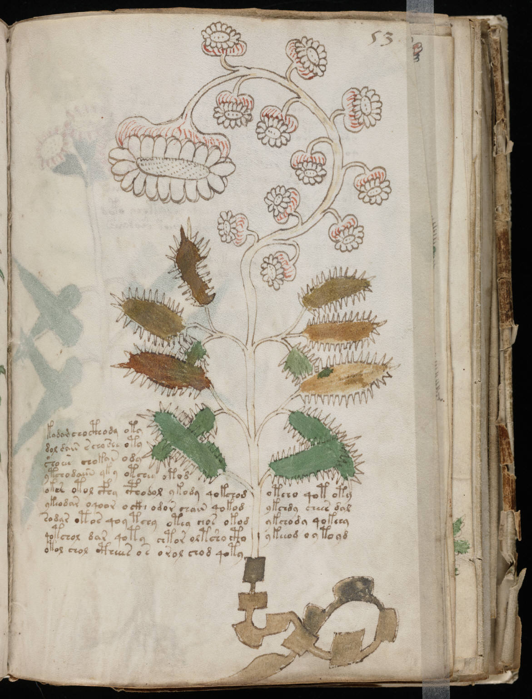

f53r
1kodam chocthody oty2dol dain schoshe oty3shoar chokan ody4ytchodaiin yky otchey okod5okes otol cfhy cphodol ykody qokchodotcho qot oty6ykeodar oqoor ockh odor chain qokodykchdy chees dal7sodar otos qoy tchy otey chos okodykchody qokchy8qotchol dar qoty chtor oltsho ctoykeeod oytoyd9otol chol ctheees os orol chod qoty
